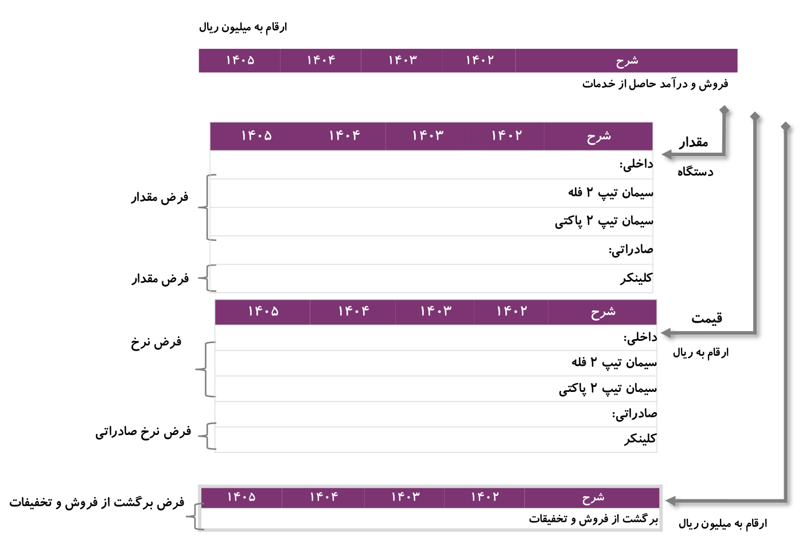

3 اردستان-۲
3.1 معرفی شرکت سیمان اردستان
شاخصهای مهم شرکت سیمان اردستان:
- داشتن معدن با ظرفیت و عیار خاک خوب
- نزدیکی به معدن
- سالهای اختیارات و حق برداشت از معدن
- تجهیزات خط تولید
- نزدیکی به جاده
- نزدیک به بازار مصرف داخلی و صادراتی
نکته. برای بررسی هر شرکت باید فرآیند تولید محصول یا خدمت آن شرکت کامل بشناسیم.
نکته. داشتن زمین زیاد برای شرکتهایی که براحتی نمیتوانند خط تولیدشان را جابجا کنند مزیتی چندان به حساب نمیآید. اما برای شرکتهای دامپروری که قابلیت جابجایی راحتتری دارند به طبع داشتن زمینی که ارزش اقتصادی پیدا کرده میتواند با اهمیت باشد.
نکته. محاسبه ظرفیت معدن برای شرکتهای کامودیتی محور بسیار حائز اهمیت هست. عیار خاک ضرب در ظرفیت معدن میتواند برآوردی از کل ظرفیت موجود برای برداشت را بدهد. با دانستن میزان برداشت شرکت در هر سال میتوان به تعداد سالهایی که شرکت امکان بهره برداری دارد دست پیدا کرد.
3.2 تحلیل تاریخی و برآورد درآمد فروش (نرخ محصولات)
3.2.1 انتقال تجربیات ارزشگذاری در بازار سرمایه کشور
- فروش درون گروهی و برون گروهی
- آیا فروش شرکت به صورت پایدار صورت میگیرد یا وابسته به شرایط میتواند دچار رکود و رونق شود.
سوال 3.1 آیا همیشه تفکیک نمایش درآمد شرکتها در بازار سرمایه کشور به صورت مقدار فروش ضربدر نرخ فروش است؟
- نرخ ارز و نرخ تورم و قیمت نفت پایه تغییر قیمت بسیاری از شرکتهای بورسی کشور (تغییر نرخ برونزا)
- نرخ محصولات و خدمات کمتر ناشی از تمایز (انحصار ناشی از بهتر بودن) تغییر میکند (تغییر نرخ درونزا)
- تفکیک نرخ صادراتی از نرخ داخلی برای شرکت های صادرات محور
سوال 3.2 آیا شرکتهای صادراتی محصولاتشان را با قیمت بالاتر صادر میکنند؟
پاسخ.
نمایش
خیر.
اکثر شرکتهای بورسی محصولاتشان را در بازارهای بین المللی برای بازاریابی و اثر تحریم پایینتر از رقابیشان مجبورند بفروشند. که در اکثر مواقع پایینتر از نرخ فروش داخلی است.در شرکتهای صادراتی محور برآورد نرخ آتی ارز اهمیت دارد (تفاوت تورم انتظاری بعلاوه فرار و خروج سرمایه)
تفکیک به محصولات تعزیراتی و غیرتعزیراتی
- قیمت محصوالت که به امنیت عمومی وابستگی دارند دیرتر از سایر محصوالت با جهش ارزی و نرخ تورم تعدیل می شود
- نحوه مذاکره جهت گرفتن افزایش قیمت
سوال 3.3 چه محصولاتی خیلی زودتر از بقیه محصولات به افزایش قیمت دلار واکنش نشان میدهند.
نکته. شرکتی که بتواند افزایش هزینههای تولید را به سرعت از مشتریانش بگیرد و افزایش قیمت دهد در بازار قیمت بر سود بالاتری دارد.
سوال 3.4
- قیمت مصوب سیمان را در ده سال گذشته چه بوده و چگونه تعیین میشود؟
- رابطه قیمت سیمان مصوب با نرخ تورم چه بوده؟
- اختلاف قیمت فروش شرکت سیمان اردستان با قیمت مصوب چقدر بوده است؟ چرا؟
نکته. ارزشگذاری در سه کلمه خلاصه میشود.
- چرا؟
- چرا؟
- چرا؟
3.3 تحلیل عملکرد تاریخی اردستان
صورت مالی سود و زیان رابه دو صورت عمودی و افقی میتوان تحلیل کرد.
- تحلیل عمودی - هم مقیاس با فروش:
- اگر تمام اقلام صورت مالی صورت سود و زیان را بر فروش تقسیم کنیم به نحوی آنها را هم مقیاس کردهایم.
- تحلیل افقی - رشد سالیانه:
- اگر اقلام هر سال را تقسیم بر سال قبل کنیم میتوانید تغییرات سالیانه آن قلم را بدست آوریم که روند سالیانه را میتوانیم مقایشه کنیم.
3.4 تحلیل مقدار فروش تاریخی اردستان
- شرکت حدود ۱۰۰ درصد از تولیدات سیمان خود را به فروش میرساند.
- بخش اصلی فروش شرکت سیمان (سیمان تیپ دو) میباشد.
- کلینکر تولیدی شرکت عمدتا در خط تولید سیمان مصرف میشود.
- سیاست کلی شرکت مصرف کلینکر برای تولید سیمان میباشد چرا که عمدتا حاشیه سود بیشتری را برای سیمان اردستاندارد.
- به طور میانگین کلینکر فروش رفته از سال ۱۳۹۷ تا ۱۴۰۰ حدود ۱۷ درصد تولیدات بوده است.
- شرکت از تاریخ ۲۰ تیر ۱۴۰۰ ملزم به فروش سیمان در بورس کالا با حداقل مقدار عرضه ۱۷۰۰۰ تن میباشد.
3.5 تحلیل نرخ فروش تاریخی اردستان
- اختلاف قیمت سیمان فله و پاکتی مربوط به قیمت پاکت میباشد که این اختلاف از ۵۰۰ هزار ریال در سال ۱۳۹۹ به ۱۲۵۰ هزار ریال (بیش از سه برابر) در سال ۱۴۰۰ رسیده است.
- معامله سیمان در بورس کالا با قیمت پایه نرخ مصوب و در نهایت قیمت معاملاتی با توجه به عرضه و تقاضا خواهد بود.
- در صورت عرضه خارج از بورس سقف قیمت معاملاتی نباید بیشتر از نرخ مصوب سیمان باشد.
3.6 تحلیل تاریخی مبغ فروش
- نرخ رشد مرکب سالانه ۲۰٪ فروش ناخالص از سال ۱۳۹۴ تا ۱۴۰۰
- روند نزولی برگشت از فروش و تخفیفات به دلیل بهبود وضعت بازار عرضه و تقاضای سیمان و عدم اعمال تخفیفات بیشتر جهت فروش سیمان تولیدی از اوایل سال
نکته. شناخت کسب و کار و جواب به چراییها دیرتر توسط هوش مصنوعی جایگزین میشود.
3.7 مفروضات برآورد صورت سود و زیان شرکت

3.8 شیوه کلان تحلیل درآمد فروش در شرکتهای بازار سرمایه کشور
3.8.1 انتقال تجربیات ارزشگذاری در بازار سرمایه کشور
سوال 3.5 سوالات مهم در خصوص درآمدهای فروش
- فروش محصولات شرکت به بخش دولتی باشد بهتر است یا خصوصی؟
- مشتریهای شرکت متنوع باشد بهتر است یا انحصاری؟
- درآمد فروش شرکت داخلی باشد بهتر است یا صادراتی؟
- رشد درآمد فروش شرکت ناشی از متغیر حقیقی (مقداری) باشد بهتر است یا متغیر اسمی (نرخ)?
3.9 رابطه درآمد فروش و هزینهها و داراییها
3.9.1 شیوه کلان تحلیل هزینهها در شرکتهای بازار سرمایه کشور
#### انواع هزینهها در صورت سود و زیان
سوال 3.6 آیا همیشه تفکیک نمایش هزینهها شرکتها در بازار سرمایه کشور به صورت ردیفهای بالاست؟
نکته. صورتهای مالی نباید به صورت خام استفاده شود و باید قبل از تحلیل آن را پالایش کنیم.
نکته. بیزینس مدل و استراتژی شرکت روی عملکرد و صورت وضعیت مالی آن طی سالهای مختلف تاثیر دارد.
سوال 3.7 سوالات مهم در خصوص هزینهها
- تمام داراییها و هزینهها در شرکتها معظوف به کدام ردیف از صورتهای مالی است؟
- چند مدل حاشیه سود داریم؟
- کدام یک از منظر ارزشگذاری و شناخت کسب و کار اهمیت بالایی دارند؟
- چرا حاشیه سود بالا/پایین از منظر ریسک در ارزشگذاری اهمیت دارد؟
- حاشیه سود بالا و حاشیه سود پایین از منظر ارزش افزوده شرکتها بیانگر چیست؟
- رابظه رشد درآمدها و رشد هزینهها در شرکتها و تاثیر آن بر ارزش سهام شرکتها چیست؟
- با چه شدتی رابطه هزینه با درآمد فروش از ردیف ۱ به ۴ کاهش مییابد?
3.9.2 بهای تمام شده کالای فروش رفته شرکتهای تولیدی
تکلیف جلسه سوم
تمرین 3.1 مقایسه سیمان اردستان با بقیه سیمانیهای ۱ میلیون تنی از نظر میزان فروش در سال ۱۴۰۱.
پاسخ.
نمایش
پاسخ …تمرین 3.2 تکمیل فروش و بهای تمام شده سیمان اردستان و رسیدن به سود ناخالص پیشبینی برای سالهای ۱۴۰۲ تا ۱۴۰۵ مطابق فایل اکسل ارسالی.
پاسخ.
نمایش
پاسخ …تمرین 3.3 چه اتفاقی باعث رشد حاشیه سود خالص سیمان اردستان طی سالهای اخیر نسبت به سالهای قبل شده است؟
پاسخ.
نمایش
پاسخ …تمرین 3.4 چرا در دورههای مختلف، درصد هزینههای فروش، اداری و عمومی متفاوت میشود؟
پاسخ.
نمایش
پاسخ …تمرین 3.5 مولفههای بهای تمام شده چه نسبتهای هم مقیاسی از کل بهای تمام شده را شامل میشود؟ این نسبتها را برای ۵ سال اخیر اردستان، شصدف، شپنا، شاراک و ددانا محاسبه کنید.
پاسخ.